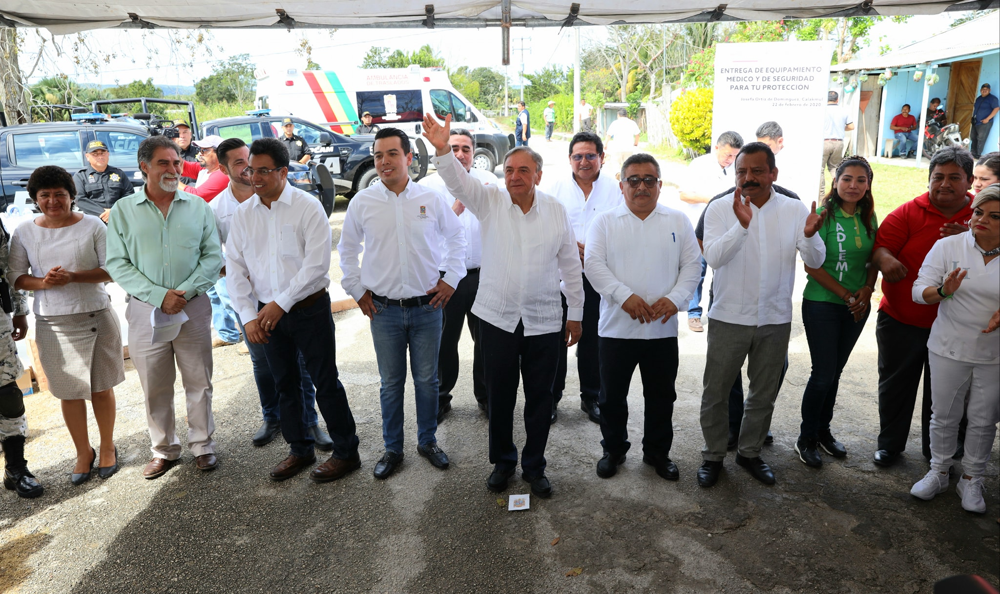

Adlemi Santiago Ramirez, se reunio con personal del #COBACAM
Gira del gobierno por la zona limitrofe

¡Soy campechano! ¡Soy #COBACAM!
Esta mañana la directora general del #COBACAM, Adlemi Santiago Ramírez , acompañó al gobernador del Estado, Carlos Miguel Aysa González, a la gira por el municipio de #Calakmul; donde se entregaron y se inauguraron obras en beneficio de los habitantes de las comunidades de Nuevo Veracruz, Josefa Ortiz de Domínguez, 21 de mayo, Gustavo Díaz Ordaz y Xpujil.
CREADORES: Acosta Delgado Sarith, Feliciano Moo Sugeydi, Landero Cruz Naomy, Martinez Montejo Brian Manuel, Montero Hernandez Jennifer del Carmen, Trejo Cruz Cairo, Uicab Paat Jorge Rodolfo, Viveros Giron Iveth, Nieto Vazquez Laura Lizbeth, Dzib Alayola Miguel Angel